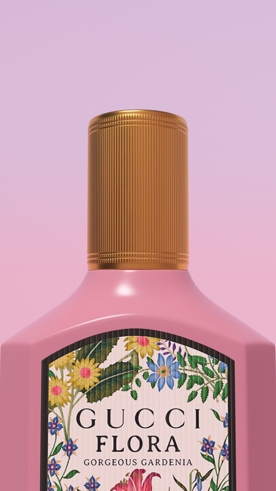
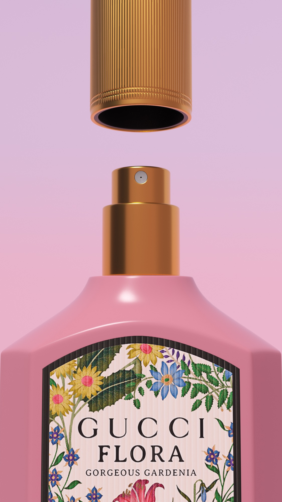

- 任务
- 产品建模、关键帧与前段产品动画
- 负责
- 产品放大进入、悬空旋转、局部细节展示，以及瓶盖动作的动态测试
- 边界
- 后续 AI 动画由团队其他成员完成


从完整产品，到品牌细节。
默认状态负责建立产品识别，开盖状态进一步露出瓶盖结构与品牌细节。我先统一两个关键画面的构图、材质和光线，再以此作为动画的视觉起点与衔接依据。
先确认节奏，再进入成片制作。
完整白模用于验证产品放大、悬浮旋转和镜头衔接；系列香味白模用于测试同一套运动语言的延展性；瓶盖过程稿则用于调整旋转角度，确保 GUCCI Logo 清楚露出。
从产品进入，
到局部品牌细节。
正式动画通过产品放大进入建立焦点，再以悬浮旋转呈现瓶身轮廓与材质，最后将视线引向瓶盖和 GUCCI Logo。运动保持克制，让用户在短时间内看清产品，并自然进入后续内容。